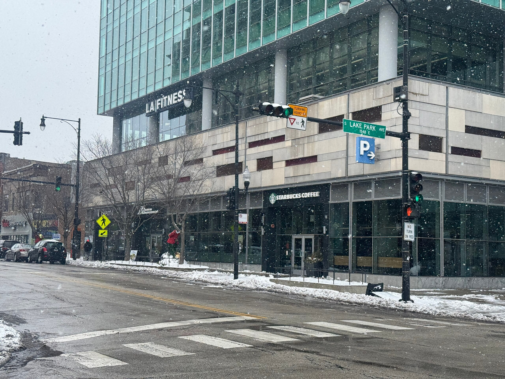

Hyde Park held for decades at roughly one-third Black and one-half white. The integration was real. It came at the expense of the renters and small businesses the plan removed. In 1962, after paired testers proved the university was still refusing Black tenants, students occupied the administration building for two weeks, and the university changed the policy.
The Land Clearance Commission razed the 1891 artists' row at 57th Street in 1962, and residents raised the money to build Harper Court in 1965, rents under one hundred dollars, so the artisans could stay. In 2007 the university bought Harper Court for $6.8 million. A glass office tower stands there now.


The Center opened on Juneteenth 2026, on the ground where the 1893 fair stood. Lakeside Alliance, a construction team led by four Black-owned Chicago firms, built it. Lines from the 2015 Selma speech are carved into the granite where Wells and Douglass once handed out their pamphlet.


Forward
rooted-forward.org